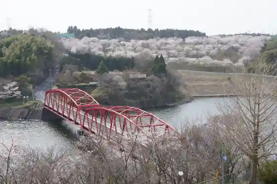
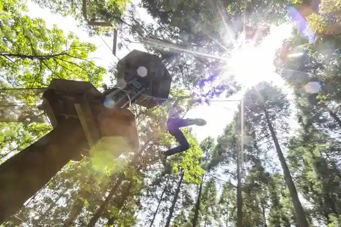
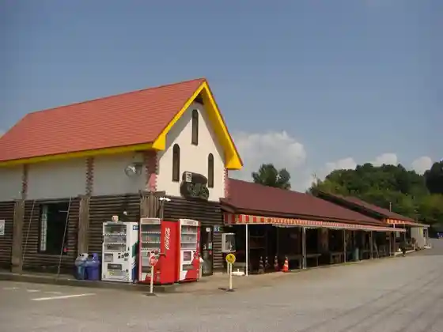

Nagara Dam
Nagara, Chiba · 0475-35-4447 · Official / source link

Foresutoadobencha Tazania
Nagara, Chiba · 0475-35-0071 · Official / source link

Roadside Station Nagara
Nagara, Chiba · 0475-35-4741 · Official / source link

Nagara Taiyo Farm
Nagara, Chiba · 0475-47-3711 · Official / source link
Sport & Do Resort Risoru Forest
Nagara, Chiba · 0475-35-3333 · Official / source link
Historic Site Nagara Yokoana Gun
Nagara, Chiba · 0475-35-3242 · Official / source link
Nagara Miyako City no Village Koryu Center Wakuwaku Nagara
Nagara, Chiba · 0475-35-0055 · Official / source link
TouTou Garden Glamping Villa
Nagara, Chiba · 090-2734-5166 · Official / source link
Ota Chujo Kensho Hi
Nagara, Chiba · 0475-35-4447 · Official / source link
Genzo Tera
Nagara, Chiba · 0475-35-3242 · Official / source link